Note
Go to the end to download the full example code.
Complex and semantic figure composition (subplot_mosaic)#
Laying out Axes in a Figure in a non-uniform grid can be both tedious
and verbose. For dense, even grids we have Figure.subplots but for
more complex layouts, such as Axes that span multiple columns / rows
of the layout or leave some areas of the Figure blank, you can use
gridspec.GridSpec (see Arranging multiple Axes in a Figure) or
manually place your Axes. Figure.subplot_mosaic aims to provide an
interface to visually lay out your Axes (as either ASCII art or nested
lists) to streamline this process.
This interface naturally supports naming your Axes.
Figure.subplot_mosaic returns a dictionary keyed on the
labels used to lay out the Figure. By returning data structures with
names, it is easier to write plotting code that is independent of the
Figure layout.
This is inspired by a proposed MEP and the patchwork library for R. While we do not implement the operator overloading style, we do provide a Pythonic API for specifying (nested) Axes layouts.
import matplotlib.pyplot as plt
import numpy as np
# Helper function used for visualization in the following examples
def identify_axes(ax_dict, fontsize=48):
"""
Helper to identify the Axes in the examples below.
Draws the label in a large font in the center of the Axes.
Parameters
----------
ax_dict : dict[str, Axes]
Mapping between the title / label and the Axes.
fontsize : int, optional
How big the label should be.
"""
kw = dict(ha="center", va="center", fontsize=fontsize, color="darkgrey")
for k, ax in ax_dict.items():
ax.text(0.5, 0.5, k, transform=ax.transAxes, **kw)
If we want a 2x2 grid we can use Figure.subplots which returns a 2D array
of axes.Axes which we can index into to do our plotting.
np.random.seed(19680801)
hist_data = np.random.randn(1_500)
fig = plt.figure(layout="constrained")
ax_array = fig.subplots(2, 2, squeeze=False)
ax_array[0, 0].bar(["a", "b", "c"], [5, 7, 9])
ax_array[0, 1].plot([1, 2, 3])
ax_array[1, 0].hist(hist_data, bins="auto")
ax_array[1, 1].imshow([[1, 2], [2, 1]])
identify_axes(
{(j, k): a for j, r in enumerate(ax_array) for k, a in enumerate(r)},
)
Using Figure.subplot_mosaic we can produce the same mosaic but give the
Axes semantic names
fig = plt.figure(layout="constrained")
ax_dict = fig.subplot_mosaic(
[
["bar", "plot"],
["hist", "image"],
],
)
ax_dict["bar"].bar(["a", "b", "c"], [5, 7, 9])
ax_dict["plot"].plot([1, 2, 3])
ax_dict["hist"].hist(hist_data)
ax_dict["image"].imshow([[1, 2], [2, 1]])
identify_axes(ax_dict)
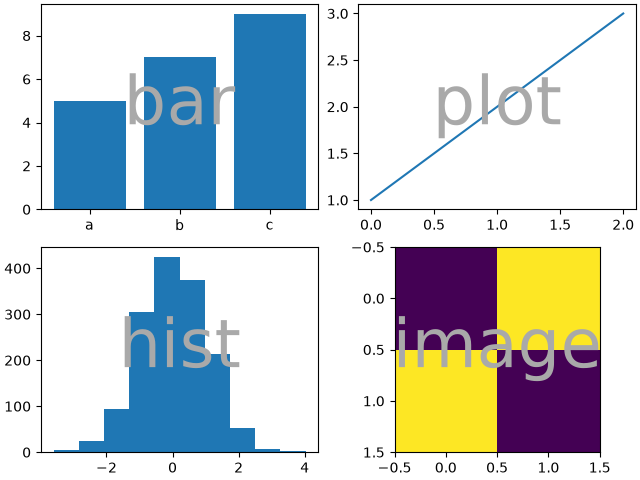
A key difference between Figure.subplots and
Figure.subplot_mosaic is the return value. While the former
returns an array for index access, the latter returns a dictionary
mapping the labels to the axes.Axes instances created
print(ax_dict)
{'bar': <Axes: label='bar'>, 'plot': <Axes: label='plot'>, 'hist': <Axes: label='hist'>, 'image': <Axes: label='image'>}
String short-hand#
By restricting our Axes labels to single characters we can "draw" the Axes we want as "ASCII art". The following
mosaic = """
AB
CD
"""
will give us 4 Axes laid out in a 2x2 grid and generates the same
figure mosaic as above (but now labeled with {"A", "B", "C",
"D"} rather than {"bar", "plot", "hist", "image"}).
fig = plt.figure(layout="constrained")
ax_dict = fig.subplot_mosaic(mosaic)
identify_axes(ax_dict)
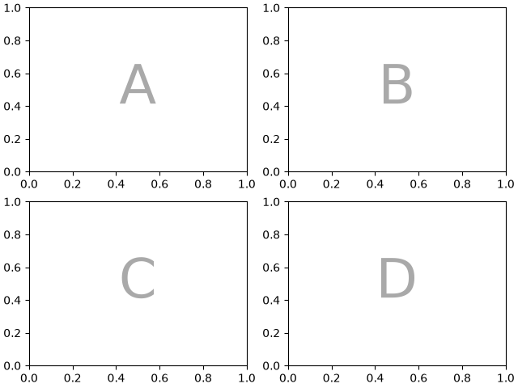
Alternatively, you can use the more compact string notation
mosaic = "AB;CD"
will give you the same composition, where the ";" is used
as the row separator instead of newline.
fig = plt.figure(layout="constrained")
ax_dict = fig.subplot_mosaic(mosaic)
identify_axes(ax_dict)

Axes spanning multiple rows/columns#
Something we can do with Figure.subplot_mosaic, that we cannot
do with Figure.subplots, is to specify that an Axes should span
several rows or columns.
If we want to re-arrange our four Axes to have "C" be a horizontal
span on the bottom and "D" be a vertical span on the right we would do
axd = plt.figure(layout="constrained").subplot_mosaic(
"""
ABD
CCD
"""
)
identify_axes(axd)
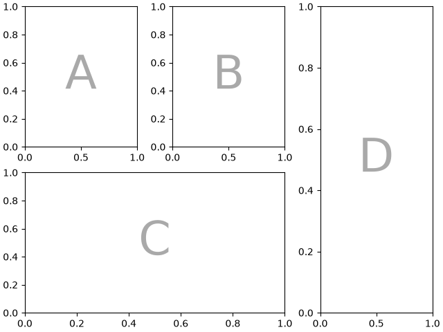
If we do not want to fill in all the spaces in the Figure with Axes, we can specify some spaces in the grid to be blank
axd = plt.figure(layout="constrained").subplot_mosaic(
"""
A.C
BBB
.D.
"""
)
identify_axes(axd)
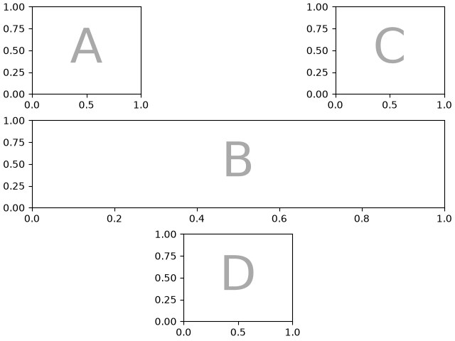
If we prefer to use another character (rather than a period ".")
to mark the empty space, we can use empty_sentinel to specify the
character to use.
axd = plt.figure(layout="constrained").subplot_mosaic(
"""
aX
Xb
""",
empty_sentinel="X",
)
identify_axes(axd)
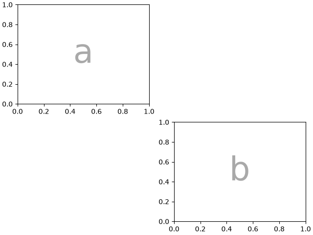
Internally there is no meaning attached to the letters we use, any Unicode code point is valid!
axd = plt.figure(layout="constrained").subplot_mosaic(
"""αб
ℝ☢"""
)
identify_axes(axd)
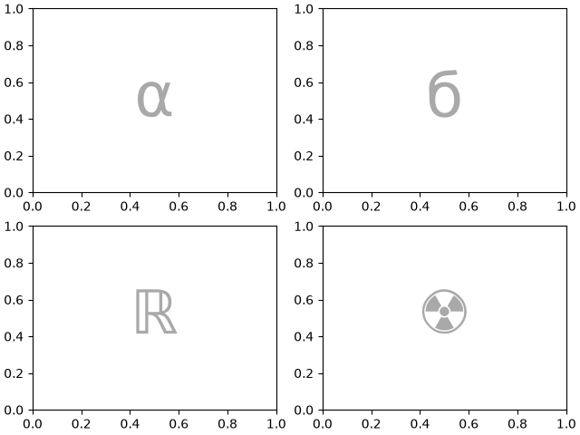
It is not recommended to use white space as either a label or an empty sentinel with the string shorthand because it may be stripped while processing the input.
Controlling mosaic creation#
This feature is built on top of gridspec and you can pass the
keyword arguments through to the underlying gridspec.GridSpec
(the same as Figure.subplots).
In this case we want to use the input to specify the arrangement,
but set the relative widths of the rows / columns. For convenience,
gridspec.GridSpec's height_ratios and width_ratios are exposed in the
Figure.subplot_mosaic calling sequence.
axd = plt.figure(layout="constrained").subplot_mosaic(
"""
.a.
bAc
.d.
""",
# set the height ratios between the rows
height_ratios=[1, 3.5, 1],
# set the width ratios between the columns
width_ratios=[1, 3.5, 1],
)
identify_axes(axd)
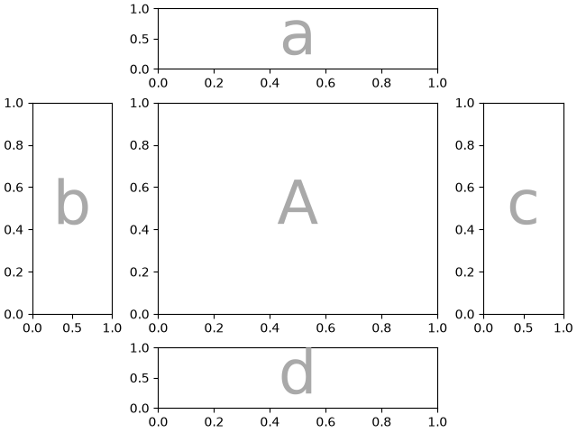
Other gridspec.GridSpec keywords can be passed via gridspec_kw. For
example, use the {left, right, bottom, top} keyword arguments to
position the overall mosaic to put multiple versions of the same
mosaic in a figure.
mosaic = """AA
BC"""
fig = plt.figure()
axd = fig.subplot_mosaic(
mosaic,
gridspec_kw={
"bottom": 0.25,
"top": 0.95,
"left": 0.1,
"right": 0.5,
"wspace": 0.5,
"hspace": 0.5,
},
)
identify_axes(axd)
axd = fig.subplot_mosaic(
mosaic,
gridspec_kw={
"bottom": 0.05,
"top": 0.75,
"left": 0.6,
"right": 0.95,
"wspace": 0.5,
"hspace": 0.5,
},
)
identify_axes(axd)
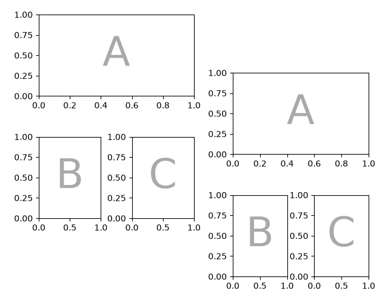
Alternatively, you can use the sub-Figure functionality:
mosaic = """AA
BC"""
fig = plt.figure(layout="constrained")
left, right = fig.subfigures(nrows=1, ncols=2)
axd = left.subplot_mosaic(mosaic)
identify_axes(axd)
axd = right.subplot_mosaic(mosaic)
identify_axes(axd)
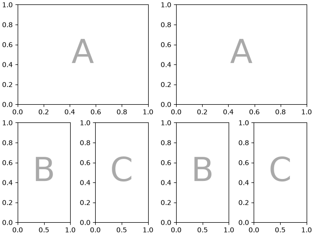
Controlling subplot creation#
We can also pass through arguments used to create the subplots
(again, the same as Figure.subplots) which will apply to all
of the Axes created.
axd = plt.figure(layout="constrained").subplot_mosaic(
"AB", subplot_kw={"projection": "polar"}
)
identify_axes(axd)
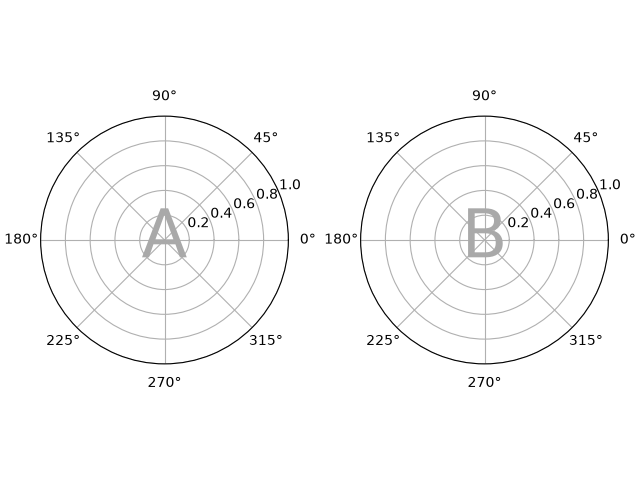
Per-Axes subplot keyword arguments#
If you need to control the parameters passed to each subplot individually use per_subplot_kw to pass a mapping between the Axes identifiers (or tuples of Axes identifiers) to dictionaries of keywords to be passed.
Added in version 3.7.
fig, axd = plt.subplot_mosaic(
"AB;CD",
per_subplot_kw={
"A": {"projection": "polar"},
("C", "D"): {"xscale": "log"}
},
)
identify_axes(axd)
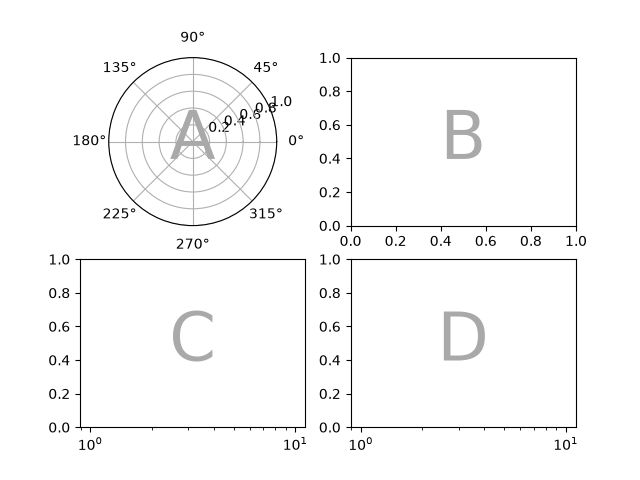
If the layout is specified with the string short-hand, then we know the Axes labels will be one character and can unambiguously interpret longer strings in per_subplot_kw to specify a set of Axes to apply the keywords to:
fig, axd = plt.subplot_mosaic(
"AB;CD",
per_subplot_kw={
"AD": {"projection": "polar"},
"BC": {"facecolor": ".9"}
},
)
identify_axes(axd)
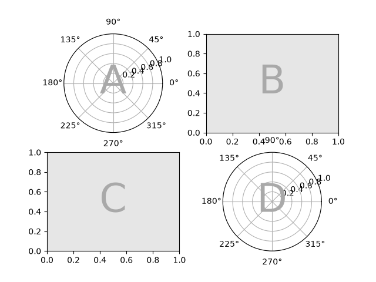
If subplot_kw and per_subplot_kw are used together, then they are merged with per_subplot_kw taking priority:
axd = plt.figure(layout="constrained").subplot_mosaic(
"AB;CD",
subplot_kw={"facecolor": "xkcd:tangerine"},
per_subplot_kw={
"B": {"facecolor": "xkcd:water blue"},
"D": {"projection": "polar", "facecolor": "w"},
}
)
identify_axes(axd)
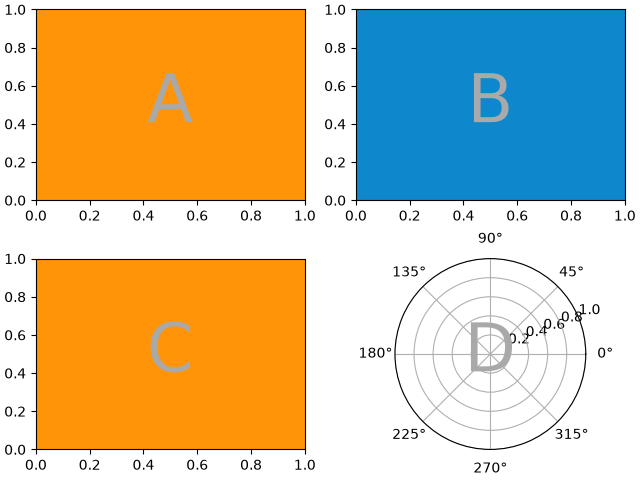
Nested list input#
Everything we can do with the string shorthand we can also do when passing in a list (internally we convert the string shorthand to a nested list), for example using spans, blanks, and gridspec_kw:
axd = plt.figure(layout="constrained").subplot_mosaic(
[
["main", "zoom"],
["main", "BLANK"],
],
empty_sentinel="BLANK",
width_ratios=[2, 1],
)
identify_axes(axd)
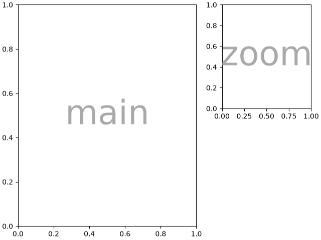
In addition, using the list input we can specify nested mosaics. Any element of the inner list can be another set of nested lists:
inner = [
["inner A"],
["inner B"],
]
outer_nested_mosaic = [
["main", inner],
["bottom", "bottom"],
]
axd = plt.figure(layout="constrained").subplot_mosaic(
outer_nested_mosaic, empty_sentinel=None
)
identify_axes(axd, fontsize=36)
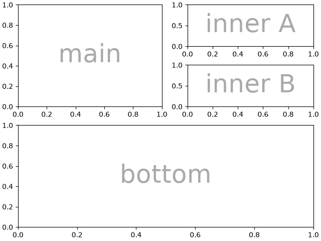
We can also pass in a 2D NumPy array to do things like
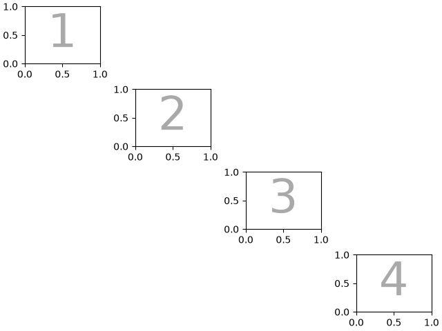
Axis sharing#
Figure.subplot_mosaic supports sharex and sharey as does
Figure.subplots. When True, all Axes in the mosaic share
the same x-axis or y-axis, which is useful for directly comparing
data across panels.
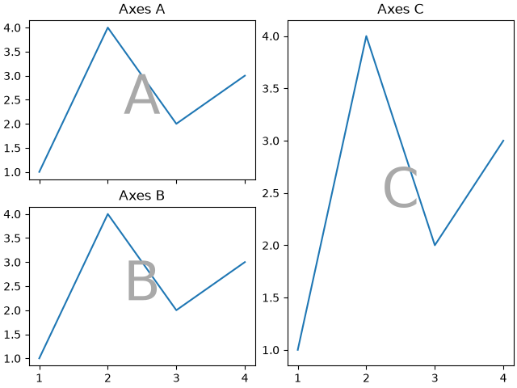
Note that when using sharex=True only the bottom row of Axes shows
x-axis tick labels, and when using sharey=True only the left column
shows y-axis tick labels. This is identical to the behavior of
Figure.subplots.
Interaction with empty sentinels#
When the mosaic layout has blank spaces (empty sentinels), axis sharing can produce inintended results. In the following example, there are no tick labels in the top row:
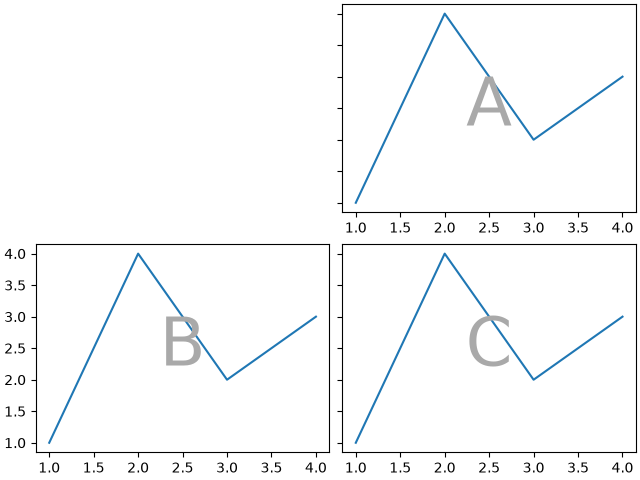
The reason for this behavior is that sharing removes tick labels from all but the most-left / most-bottom grid positions.
The fix is to manually re-enable tick labels on the Axes that should
display them using Axes.tick_params:
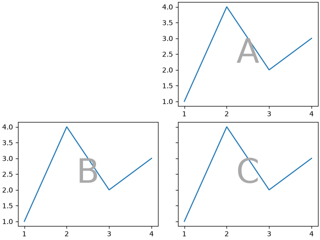
Total running time of the script: (0 minutes 16.448 seconds)